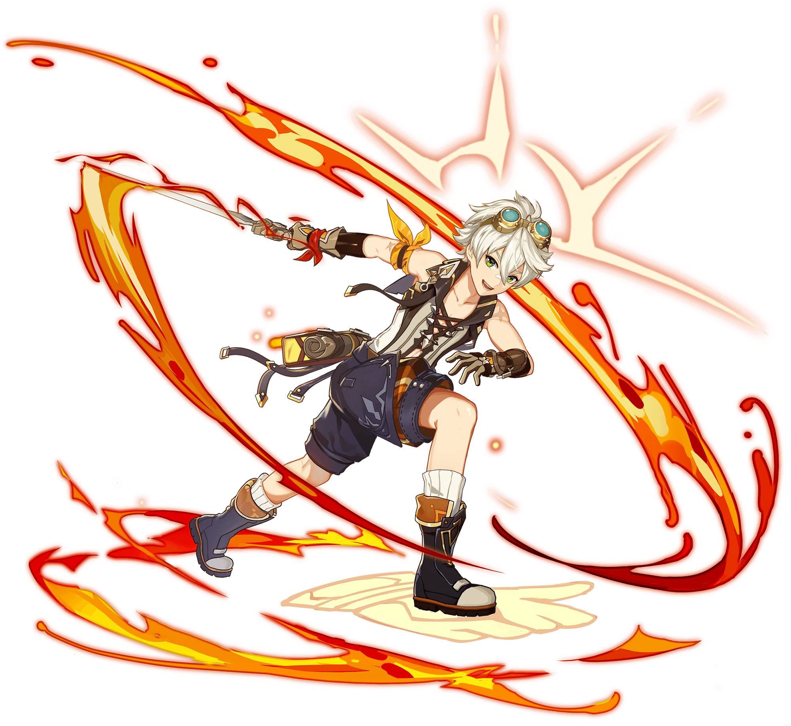

Arconte Anemo:

Venti
Venti es el Arconte del viento y un personaje muy versátil en combate.
Historia
Orígenes:
Arconte Anemo: Venti es el Arconte del elemento Anemo y gobernante de Mondstadt. Aunque es un dios, prefiere vivir como un bardo itinerante, lo que le permite mantener una conexión con el pueblo y evitar convertirse en un tirano.
Historia: Hace 2600 años, Mondstadt estaba dividido entre dos dioses: Decarabian y Andrius. Un joven anónimo lideró una guerra por la emancipación con la ayuda de un espíritu del viento, que más tarde se convertiría en Barbatos, el dios del viento.
Personalidad:
Bardo Despreocupado: Venti es conocido por su actitud despreocupada y su amor por la música. A menudo se le ve cantando canciones en las calles de Mondstadt.Inteligente y Místico: A pesar de su apariencia relajada, Venti es un personaje muy inteligente y sabio, que oculta mucho sobre su pasado y sus verdaderas intenciones.
Habilidades en Combate:
Elemento Anemo: Venti utiliza un arco y controla el elemento Anemo, lo que le permite infligir daño aéreo y agrupar a los enemigos para facilitar reacciones elementales.Habilidad Elemental: Sonata Celestial.
Ráfaga Elemental: Gran Oda del Viento.
Ataque en Picado: Contención del caos.
Mejor equipo:
- Bennett (Apoyo) 
- Mona (Sub DPS)
- Xiangling (DPS)
Clic en la imagen.

Clic en la imagen.